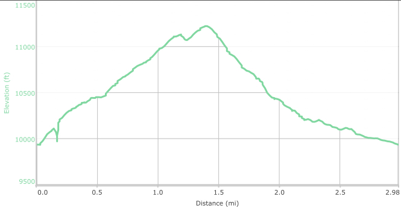
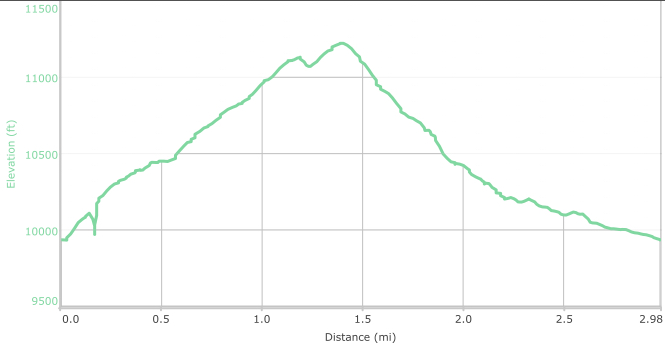

Hike New Mexico
w/ Tom & Ken
Alamo Vista - Upper Tesuque Loop
| Difficulty | Round-trip | Type | Elev. Chg. | Exposure | Wow Factor | Facilities | Seasons | Photos | By Car |
|---|---|---|---|---|---|---|---|---|---|
| Moderate | 3 miles | Loop | 1,500 ft | Mostly shade | Views, Aspens | Outhouse | Not Winter |
 |

|


 

- Sep 22, 2016: Solid Aspens adorn the trail up
- Sep 22, 2016: Beautiful Carl's Meadow 1\/2 mile up from the trailhead
- Sep 22, 2016: Beautiful views abound on the way up
- Sep 22, 2016: Splendor abounds with autumn accents
- Sep 22, 2016: Bill stakes a claim - but was beat by the ski lift post
- Sep 22, 2016: Bill forges downhill towards the forest road at Aspen Vista
- https://www.flickr.com/photos/139088815@N08/29237679504/in/photostream/
- https://www.flickr.com/photos/139088815@N08/29571630930/in/photostream/
- https://www.flickr.com/photos/139088815@N08/29238514403/in/photostream/
- https://www.flickr.com/photos/139088815@N08/29782335381/in/photostream/
- https://www.flickr.com/photos/139088815@N08/29237641814/in/photostream/
- https://www.flickr.com/photos/139088815@N08/29829870806/in/photostream/
The Alamo Vista trail starts at the same point as the Aspen Vista Forest Road that is so very popular, especially in the fall. Immediately after the gate blocking motorized vehicles, the trail starts on the left and very soon has a trail marker for "Alamos Vista Trail 381". The trail ascends rather steeply from there with a few short segments of less incline. The hike takes you through very lovely Aspen groves, and near the end, a transition to Blue Spruce. The views as you ascend are quite lovely, and at the top, magnificent. Although the book reference below suggests returning the same way you came, with a little extra elevation gain, you can connect to the upper end of the Upper Tesuque Trail and make a loop hike by descending to the Aspen Forest Road and back to the parking area.